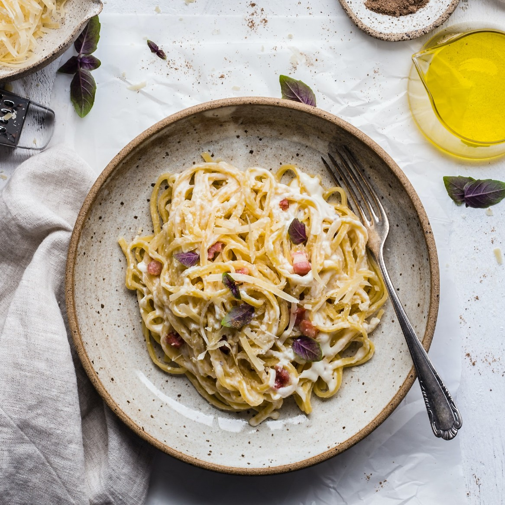

Pasta Carbonara

Description
This authentic Carbonara recipe requires only a few
simple ingredients and can be made in just 20 minutes.
The key to success when it comes to Carbonara is the technique.
It can take a few attempts to master but once you do, I promise it
will be worth it.
Ingredients
- 400g Pasta
- 4 eggs
- 250g grated peccorino cheese
- 200g guanchale or panchetta
- Salt and pepper to taste
Steps
- Bring a large pot of water
to a boil and season with salt.
Cook pasta according to package directions.
Reserve 1 1/2 cups of the pasta water before
draining.
- In a large saucepan, cook pancetta (or bacon)
over medium heat until crisp, about 7 to 10
minutes. Drain excess fat, reserving just 2
tablespoons of the grease.
- In a mixing bowl,
whisk together egg yolks, eggs, and 1 cup
pecorino romano cheese.
- Toss drained pasta with cooked pancetta
(or bacon) and reserved grease.
Pour egg mixture in, along with ½
cup reserved pasta water and toss together
with pasta 2 minutes. Add more of the reserved
water to thin out your sauces, as necessary.
- Serve hot topped with remaining cheese,
and freshly ground pepper.